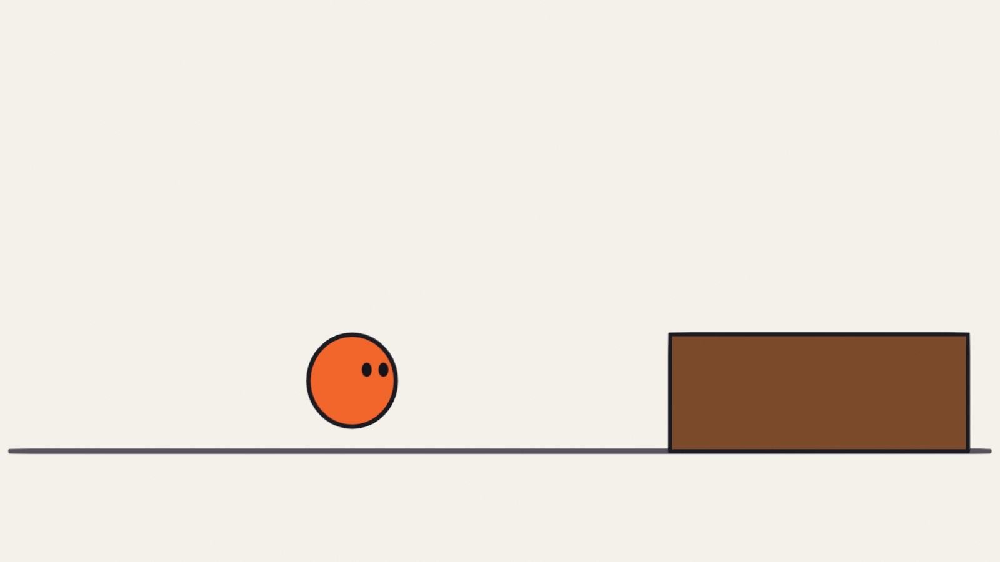
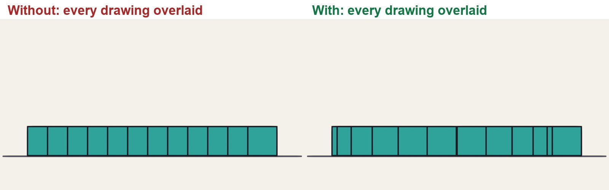
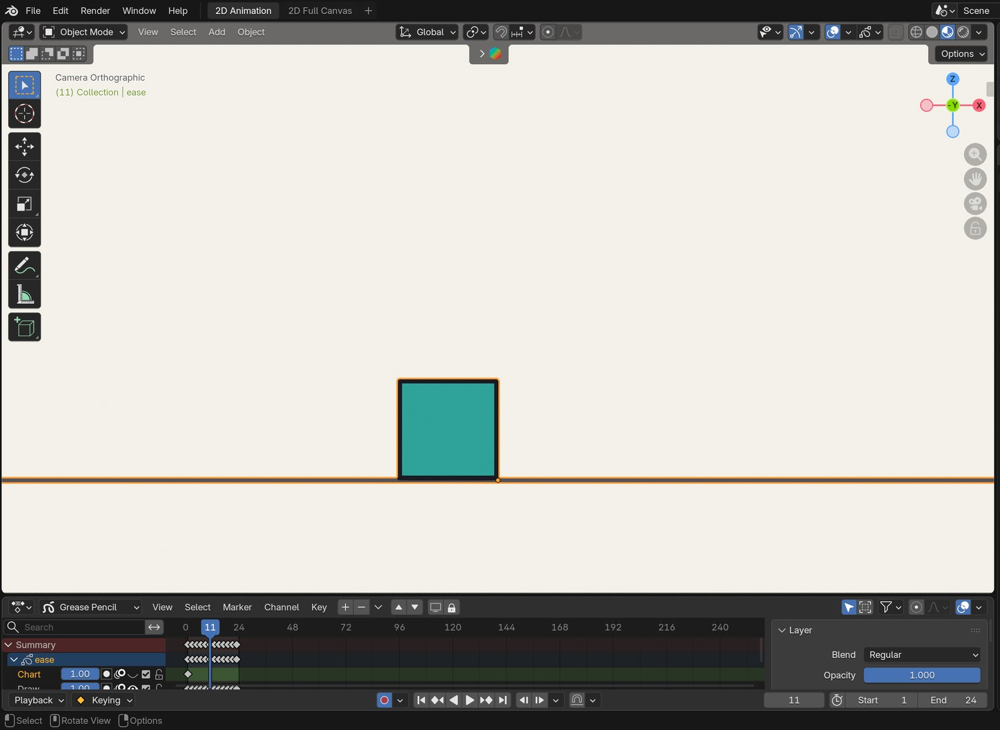
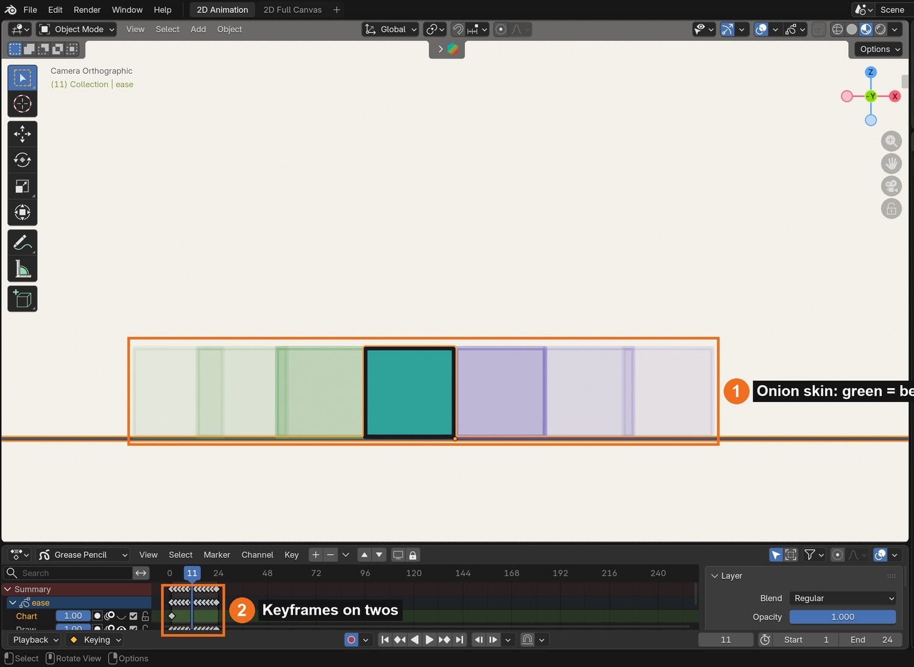
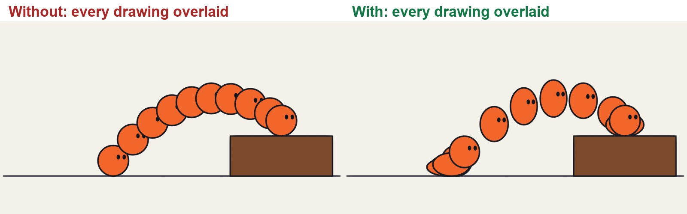
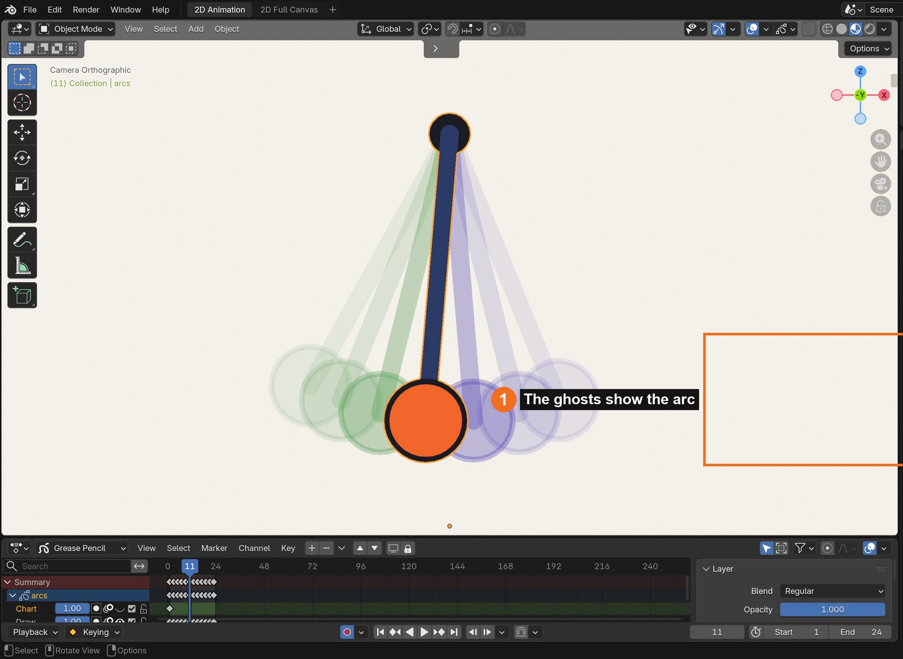
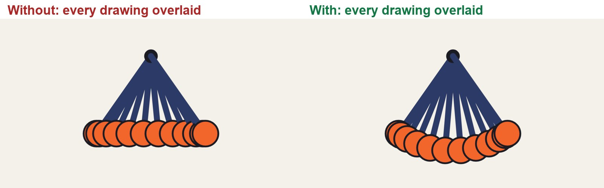
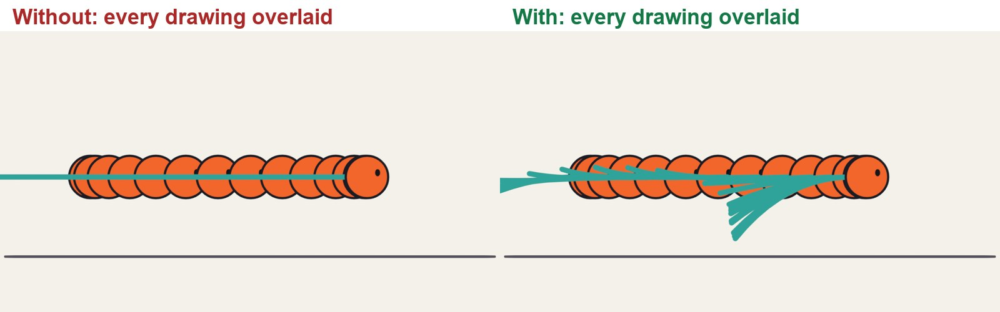

Grease Pencil · Multimedia 12 · Sprint 7 extension · 4 lessons · the principles of animation
MAKE IT FEEL ALIVE.
Four classic principles of animation, each drawn wrong and right in Grease Pencil, then a shot of your own that uses them all.
7 illustrated stagesFour lessonsSpacing · anticipation · arcs · follow-throughDo 2D Animation Studio first

A real Grease Pencil drawing from the anticipation demo: the stretch at the top of the jump.
Weight. Intent. Life.
You can already make things move. This is about making them feel like they mean it.
My supports
Turn on any help you want. Your teacher may have set some for you. They change how the guide helps, not what is assessed.
Studio brief
Four exercises and one shot.
Animators learn the principles by doing small exercises badly, then better. Do the four exercises, then make one original five-second shot and change it for a director.
You will hand in
The block: even and eased
The jump with anticipation
The swing on an arc
The tail with follow-through
Your shot, the changed version, and a paper spacing chart
Where the ideas come from
These principles were set down by the Disney animators Frank Thomas and Ollie Johnston, and are taught in Richard Williams’s book. Every drawing and explanation here is our own.
Studio animators still do these exact tests: a slide, a jump, a swing, a tail. A reel of clean, simple exercises shows a studio that you understand weight and timing, which matters more than fancy drawing.
Knowledge first
Why this works.
Spacing shows weight
Close drawings are slow; far-apart drawings are fast. Heavy things take time to start and to stop.
Anticipation shows intent
A move the opposite way first tells the audience a decision has been made.
Arcs show anatomy
Joints swing. Their ends travel on curves, and limbs keep their length.
Follow-through shows material
Loose parts arrive late and stop late. How they settle tells you what they are made of.
What this assesses
Skills you will show.
Skill (sprint skill ID)
Where you show it
Timing and spacing · AN-TIM-01
Steps 1, 2 and 7
Acting and staging · AN-ACT-01 · AN-STG-01
Steps 3, 4 and 7
Critique and refinement · GD-CRIT-01
Step 7
Primary achievement evidence: the original shot and the director’s change (step 7). Guided exercises and supports are recorded separately from achievement.
Session A · Lesson 1 · Grease Pencil
Spacing: slow in and slow out.
Things with weight do not start or stop instantly. You show that by how far apart you place the drawings.
TODAYWatch and compare (10 min), draw the even version (20 min), draw the eased version (30 min).
01
See what spacing does
Start here: read or listen to the theory deck (about 10 minutes, with checkpoint questions), then come back.
IN SHORTSame timing, different spacing; equal gaps look mechanical; small-big-small looks weighted.
READ ALOUD
DOCUMENT: This guide · a new 2D Animation file SELECT: Nothing yet TOOLS / ROUTE: Play · compare
Play the clip below. Both blocks leave at the same moment and arrive at the same moment. Only the spacing of the drawings differs.
Look at the chart under it: every drawing printed on top of each other. On the left the gaps are equal. On the right they are small, then big, then small.
Say which block feels heavier, and which feels like a computer moved it.
In Blender choose File › New › 2D Animation. Save as Principles_YourName.blend.
Turn on onion skin (Overlays, top right of the viewport) so you can see the drawings before and after.
Without and with slow in and slow out. Same start, same stop, same number of drawings.
STEP CHECKLIST
GLOSSARY
Timing: How many frames or drawings an action takes
Spacing: How far the subject moves between one drawing and the next

Real Grease Pencil drawings, all overlaid. Left: even spacing. Right: slow out of the start, slow in to the stop.
WHYTiming is how many drawings an action takes. Spacing is where each drawing sits. Same timing, different spacing, different feeling.
CHECKYou can point at the chart and say where the block is slow and where it is fast.
FIXCannot see onion skin? It only shows in Draw or Edit mode with a Grease Pencil object selected.
WORKED EXAMPLE · DIFFERENT OBJECTThe demo uses 12 drawings on twos: one new drawing every second frame at 24 frames per second.
STRETCH (AFTER THE CHECK PASSES)Find a real video of a car pulling away and count how the gap grows.
Method basis: T1 · W1. Values and sequence are authored for this project.
02
Animate the block twice
IN SHORTTwo keys; even in-betweens; duplicate layer; bunch the ends, spread the middle; chart it.
READ ALOUD
DOCUMENT: Principles_YourName.blend SELECT: Two 12-drawing slides: even, then eased TOOLS / ROUTE: Draw mode · Dope Sheet · onion skin
Draw a ground line on its own layer. On a second layer draw a block at the left on frame 1.
Go to frame 23 and draw it at the right. These are your two key drawings.
First version: on every second frame between them, draw the block moved the same distance each time. Use the onion skin to keep the gaps equal.
Duplicate the layer and hide the first. Second version: redraw the in-betweens so the first three and the last three are bunched close to the keys and the middle ones are far apart.
Play both. Then mark your spacing on paper as a chart: a line with a tick for each drawing.
Click by click (real Blender screenshots)

The same frame with onion skin switched off, for comparison.
STEP CHECKLIST
GLOSSARY
Key drawing: A drawing that fixes an important position
In-between: A drawing that carries the move from one key to the next

Real screenshot: the demo file on frame 11. The onion skin (1) shows the drawings before and after; the keyframes (2) sit on every second frame.
WHYOnion skin is your spacing chart, live. If the ghosts are evenly spread, the move will look even.
CHECKTwo versions you can switch between, and a paper chart of the eased one.
FIXBlock changes size between drawings? Draw it once, then copy the keyframe (Ctrl-C, Ctrl-V in the Dope Sheet) and move it in Edit mode.
WORKED EXAMPLE · DIFFERENT OBJECTDemo spacing follows a smooth ease: the middle gap is about five times the first.
STRETCH (AFTER THE CHECK PASSES)Make a third version that eases out but stops dead. What does that feel like?
Method basis: B1 · B3. Values and sequence are authored for this project.
Session B · Lesson 2 · Grease Pencil
Anticipation.
Before a big action, a small one in the opposite direction. It tells the audience what is about to happen, and it gives the action power.
TODAYWatch and compare (10 min), plan the three parts (15 min), animate the jump (40 min).
03
Read the jump: ready, go, land
Recall first (from last lesson, no peeking):
What is the difference between timing and spacing?
What does a spacing chart with equal gaps look like when played?
Where do the drawings bunch together in a slow in?
Say or write your answers, then check them against your file.
IN SHORTPreparation, action, reaction; the preparation goes the opposite way to the action.
READ ALOUD
DOCUMENT: This guide SELECT: Nothing yet TOOLS / ROUTE: Play · compare
Play the clip. On the left the ball simply travels to the step. On the right it crouches first.
In the chart, find the bunch of drawings at the start of the right-hand version. That is the anticipation: it squashes down and leans back.
Find the stretch in the air and the squash on landing.
Notice the right-hand version spends about a third of its drawings before it leaves the ground.
Act it: jump onto a step yourself. What does your body do first?
Without and with anticipation.
STEP CHECKLIST
GLOSSARY
Anticipation: A small move the opposite way before the main action
Squash and stretch: Changing a shape’s proportions, keeping its volume, to show force

Left: no anticipation. Right: crouch, stretch through the air, squash on landing.
WHYAn action has three parts: the preparation, the action, and the reaction. Leave out the first and the action looks weak and sudden.
CHECKYou can name the three parts in the chart.
FIXCannot see the crouch? Step through with the left and right arrow keys instead of playing.
WORKED EXAMPLE · DIFFERENT OBJECTIn the demo the crouch squashes the ball to about 60 % of its height.
STRETCH (AFTER THE CHECK PASSES)Watch a cat before it jumps. How long is its anticipation?
Method basis: T1. Values and sequence are authored for this project.
04
Animate your own jump with anticipation
IN SHORTCrouch (squash, lean back); arc guide; stretch in the air; squash on landing; settle.
READ ALOUD
DOCUMENT: Principles_YourName.blend · a new layer SELECT: A 12-drawing jump onto a step TOOLS / ROUTE: Draw · onion skin · squash and stretch
Draw a step on the right. Draw a ball character on the ground at the left on frame 1.
Frames 3 to 7: the crouch. Squash it lower and wider each drawing and let it lean back a little.
Frames 9 to 17: the jump. Draw the path first as a light arc on a guide layer. Stretch the ball along the arc, most at the middle.
Frames 19 to 23: the landing. Squash on contact, then return to round.
Play it. If the jump looks weak, make the crouch deeper or hold it one drawing longer.
STEP CHECKLIST
GLOSSARY
Volume: The amount of “stuff” in a shape, which should stay the same as it squashes
Guide layer: A layer of rough marks you hide before the final
WHYThe deeper and longer the anticipation, the bigger the action reads. You are setting the audience up.
CHECKA jump with a clear crouch, a stretched arc and a squashed landing.
FIXBall seems to grow or shrink? When it gets wider it must get shorter: keep the volume the same.
WORKED EXAMPLE · DIFFERENT OBJECTDemo timing: 4 drawings of crouch, 6 in the air, 2 to land and settle.
STRETCH (AFTER THE CHECK PASSES)Add a tiny anticipation before the crouch: a small rise first.
Method basis: T1 · B1. Values and sequence are authored for this project.
Session C · Lesson 3 · Grease Pencil
Arcs, then follow-through.
Living things move in curves, because they are built from joints. And when a body stops, its loose parts keep going.
TODAYThe swing on an arc (30 min), the tail that drags and settles (35 min).
05
Swing an arm on an arc
Recall first (from last lesson, no peeking):
What are the three parts of an action?
Which way does an anticipation go, compared with the action?
What must stay the same when you squash a shape?
Say or write your answers, then check them against your file.
IN SHORTShoulder pivot; two keys; arc guide; every in-between on the arc; ease the ends.
READ ALOUD
DOCUMENT: Principles_YourName.blend · a new layer SELECT: A 12-drawing swing, drawn two ways TOOLS / ROUTE: Draw · onion skin
Play the clip. On the left the hand travels in a straight line between the two ends. Watch the arm: it gets shorter in the middle.
On the right the hand follows a curve, because the arm is a fixed length swinging from the shoulder.
Draw a shoulder dot. On frame 1 draw the arm and hand low on the left; on frame 23, low on the right.
Draw a light arc on a guide layer from one hand position to the other, centred on the shoulder.
Draw the in-betweens with every hand on that arc. Ease the spacing: close together at each end, wide in the middle.
Straight-line in-betweens against in-betweens on an arc.
Click by click (real Blender screenshots)

Real screenshot: onion skin on the demo swing. The ghosts trace the arc.
What went wrong when we built the demo: our first attempt at this demo placed the middle drawing exactly halfway between the keys, as a computer would. The arm visibly shrank. That mistake is now the left-hand side of the clip.
STEP CHECKLIST
GLOSSARY
Arc: The curved path a joint-driven movement follows
Pivot: The fixed point something swings around

Left: straight-line in-betweens; the hand slides along a flat line and the arm changes length. Right: the hand stays on its arc.
WHYAn in-between is not halfway between two drawings on the page. It is where the joint would really be.
CHECKA swing in which the arm stays the same length in every drawing.
FIXArm length changing? Measure it against the first drawing with the onion skin on.
WORKED EXAMPLE · DIFFERENT OBJECTThe demo arm swings through 70 degrees.
STRETCH (AFTER THE CHECK PASSES)Add a forearm that bends: the hand then follows a different, flatter arc.
Method basis: T1 · W1. Values and sequence are authored for this project.
06
Make a tail drag, overshoot and settle
IN SHORTAnimate the body first; tail lags; overshoot on the stop; smaller swings; settle.
READ ALOUD
DOCUMENT: Principles_YourName.blend · a new layer SELECT: A ball with a tail that travels and stops, on 24 drawings TOOLS / ROUTE: Draw · onion skin
Play the clip. On the left the tail is stiff. On the right it drags behind while the ball moves, swings past when the ball stops, and settles.
Draw a ball with a long tail. Animate the ball first: it travels and stops about halfway through the shot, with slow in and slow out.
Now the tail, on its own layer. While the ball moves, bend the tail back so the tip lags behind.
When the ball stops, keep the tail going: it swings forward past the rest position. That is the overshoot.
Then swing it back, a smaller amount each time, until it rests. Three swings is usually enough.
A stiff tail against a tail with drag, overshoot and settle. 48 frames.
STEP CHECKLIST
GLOSSARY
Follow-through: Loose parts carrying on after the body stops
Overlapping action: Parts of one character moving at slightly different times

Left: a stiff tail. Right: the tail drags, overshoots and settles after the ball has stopped.
WHYThe body leads and the loose parts follow late. Because they arrive late, the movement keeps going after the main action has ended, and the stop feels soft.
CHECKA tail that is still moving for at least six drawings after the ball has stopped.
FIXTail looks like rubber? Bend it most at the tip and least at the root.
WORKED EXAMPLE · DIFFERENT OBJECTThe demo holds the ball still for the second half of the shot while the tail settles.
STRETCH (AFTER THE CHECK PASSES)Give your Lesson 2 jumper a pom-pom or ears that follow through on the landing.
Method basis: T1. Values and sequence are authored for this project.
Session E · Lesson 4 · Grease Pencil
Put them together.
One short shot of your own that uses all four ideas, then a director’s note.
TODAYPlan with a chart (15 min), animate (40 min), director’s note (15 min).
07
Practical check: a five-second shot and the director’s note
Recall first (from last lesson, no peeking):
Why do limbs move in arcs?
What is follow-through?
What is an overshoot?
Say or write your answers, then check them against your file.
IN SHORTDesign; plan keys and chart; animate on twos; director’s card; point to a frame for each principle.
READ ALOUD
DOCUMENT: Principles_YourName.blend · a new scene SELECT: An original shot, then a change TOOLS / ROUTE: Your own decisions
Design a simple character of your own: a shape with one loose part (a tail, ears, a scarf).
Plan one action with a beginning and an end: it gets ready, it does something, it stops. Draw the keys and a spacing chart on paper first.
Animate it on twos, 5 seconds or less. It must show slow in and slow out, anticipation, an arc, and follow-through.
Read your director’s card (below) and make the change in a copy of the scene.
Screen both versions. Point to one frame for each principle and say what it is doing.
Card
The director says
1 · Heavier
“It weighs ten times as much. Same action.”
2 · Nervous
“It is not sure it should be doing this.”
3 · Twice as fast
“Half the time. It must still read.”
4 · It misses
“It does not get what it reached for. Show the reaction.”
Independent evidence: the main achievement evidence for this tutorial.
STEP CHECKLIST
GLOSSARY
On twos: One new drawing every two frames
Pose: A single clear drawing that shows what the character is doing or feeling
WHYThe principles are not rules to tick off. They are what makes a drawing seem to have weight and a will of its own.
CHECKAn original shot, a changed version, and four frames you can point to.
FIXStuck for an idea? A character notices something, reaches for it, and gets it. (Independent step: the Coach can explain tools but not decide your drawings.)
WORKED EXAMPLE · DIFFERENT OBJECTWorked example on a different shot: “make it heavier” needed a deeper crouch, wider spacing in the fall and a longer settle, not new drawings everywhere.
STRETCH (AFTER THE CHECK PASSES)Shoot the same action as a light character and a heavy one, changing only timing and spacing.
Method basis: T1 · W1. Values and sequence are authored for this project.
Before you submit
Student QA.
Evidence conversation
Keep it short and specific.
SENTENCE FRAMESMy spacing is ___ at the start because ___. · The anticipation tells the audience ___. · For the director’s card I changed ___.
Figures marked Illustration are drawn, not screenshots. Step values are starting points authored for this project. Draft for teacher review; not yet classroom-piloted.